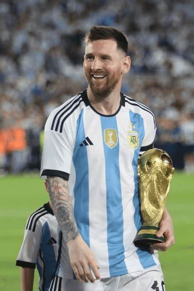
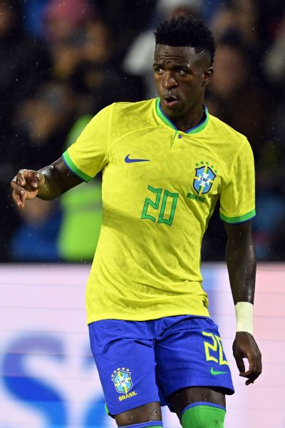
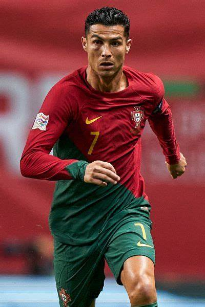

A foci története
Az ókori Róma játéka, a harpastum, egy rögbiféle játék volt, leginkább ez lehet a labdarúgás távoli elődje. A római légiók hódító útjukra magukkal vitték a szőrrel bélelt felfújt hólyagot, a bőrlabdát.
A labdajátékok számos variációját játszották a középkori Európában, melynek különböző területein a szabályok nagymértékben eltérőek voltak. 1400 körül Firenzében a calció labdajátékot játszották előírt szabályok mellett, rögzített méretű játéktéren.
A legjobb csapatok
Az egyes csapatok sikeressége az évek során változott, de mindig is voltak kiemelkedő klubok, amelyek dominálták a világ legnagyobb bajnokságait.
Jelenleg olyan csapatok uralják a sportágat, mint a Real Madrid, a Barcelona és a Bayern München, akik különböző címekkel és trófeákkal büszkélkedhetnek.
Labdarúgó Galéria


